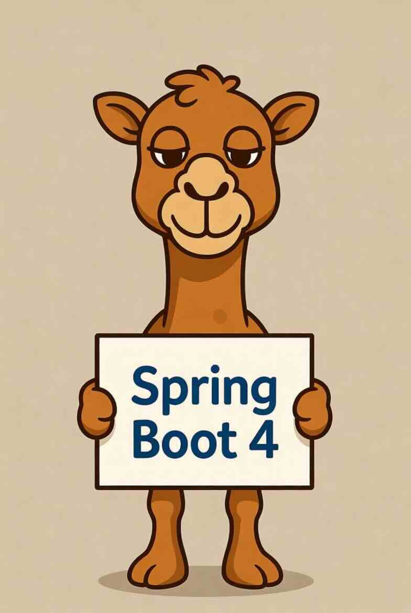

Apache Camel 4.19 has just been released.
This release introduces a set of new features and noticeable improvements that we will cover in this blog post.
Camel Spring Boot
This is our first release that supports Spring Boot v4. Spring Boot v3 is no longer supported.
Camel Jackson 3 Components
Four new components have been added which provide Jackson 3 support - they are named similarly to the previously existing camel-jackson components. Jackson 3 operates under a different package name (tools.jackson.* vs com.fasterxml.jackson) and there are a number of API changes between Jackson 2 and Jackson 3.
The upgrade guide has a lot of details on how to migrate your Camel application to Jackson 3.
Camel Core
Simple Language
Added more functions to the simple language to work with list/map:
listAdd(fun)- Adds the result of the function to the message body as a list object.listAdd(source,fun)- Adds the result of the function to the source expression as a list object.listRemove(fun)- Removes the result of the function (use int to remove by position index) from the message body as a list object.listRemove(source,fun)- Removes the result of the function (use int to remove by position index) from the source expression as a list object.mapAdd(key,fun)- Adds the result of the function to the message body as a map object.mapAdd(source,key,fun)- Adds the result of the function to the source expression as a map object.mapRemove(key)- Removes the key from the message body as a map object.mapRemove(source,key)- Removes the key from the source expression as a map object.sort(exp,reverse)- Sorts the message body or expression in natural order
And also new functions for JSON:
toPrettyJson(exp)- Converts the expression to a JSonStringrepresentation. String values are returned as-is, null values return null, all other types are serialized to JSon in pretty mode.toPrettyJsonBody- Converts the message body to a JSonStringrepresentation. String values are returned as-is, null values return null, all other types are serialized to JSon in pretty mode.toJson(exp)- Converts the expression to a JSonStringrepresentation. String values are returned as-is, null values return null, all other types are serialized to JSon.toJsonBody- Converts the message body to a JSonStringrepresentation. String values are returned as-is, null values return null, all other types are serialized to JSon.simpleJsonpath(exp)- When working with JSon data, then this allows using built-in Simple JsonPath, for example, to extract data from the message body (in JSon format).simpleJsonpath(input,exp)- Same assimpleJsonpath(exp)but to use the input expression as the source of the JSon document.
XML and YAML DSL
You can now configure SSL/TLS directly in the XML and YAML DSL.
Here is a basic example in XML and YAML:
<camel xmlns="http://camel.apache.org/schema/xml-io">
<sslContextParameters id="mySSL" keyStore="server.p12" keystorePassword="changeit"
trustStore="truststore.p12" trustStorePassword="changeit"/>
<route id="sslRoute">
<from uri="direct:ssl"/>
<to uri="mock:ssl"/>
</route>
</camel>
- sslContextParameters:
id: mySSL
keyStore: server.p12
keystorePassword: changeit
trustStore: truststore.p12
trustStorePassword: changeit
- from:
uri: "direct:ssl"
steps:
- to: "mock:ssl"
In YAML DSL then we have added support for configuring transformer and validator, something like:
- transformers:
loadTransformer:
defaults: true
endpointTransformer:
ref: myXmlEndpoint
fromType: xml:XmlXOrder
toType: "java:org.example.XOrder"
customTransformer:
className: org.example.MyTransformer
fromType: other:OtherXOrder
toType: "java:org.example.XOrder"
- validators:
endpointValidator:
type: xml:XmlXOrderResponse
uri: "myxml:endpoint"
customValidator:
type: other:OtherXOrder
className: org.example.OtherXOrderValidator
Post-Quantum Cryptography (PQC)
Camel 4.19 brings the most significant set of PQC enhancements since the camel-pqc component was introduced in 4.12, spanning hybrid cryptography, key lifecycle management, and platform-wide quantum-safe TLS readiness.
Hybrid Cryptography
The headline feature is hybrid cryptography – combining a classical algorithm with a post-quantum algorithm for defense-in-depth during the quantum transition period.
New hybrid operations:
hybridSign/hybridVerify– combines a classical signature (ECDSA, Ed25519, RSA) with a PQC signature (ML-DSA, SLH-DSA, etc.).hybridGenerateSecretKeyEncapsulation/hybridExtractSecretKeyEncapsulation/hybridExtractSecretKeyFromEncapsulation– combines a classical key agreement (ECDH, X25519, X448) with a PQC KEM (ML-KEM, etc.).
Default material classes make getting started straightforward, for example PQCDefaultECDSAMLDSAMaterial (ECDSA + ML-DSA) or PQCDefaultX25519MLKEMMaterial (X25519 + ML-KEM). The KDF used to combine secrets is configurable (HKDF-SHA256/384/512), and algorithm metadata is embedded in the wire format so the receiver can determine which combination was used.
Key Lifecycle Management
Key lifecycle operations now work end-to-end through the PQC producer: generateKeyPair, rotateKey, exportKey, importKey, getKeyMetadata, listKeys, expireKey, revokeKey, and more. Three backends are available:
FileBasedKeyLifecycleManager(local file system, now using PKCS#8/X.509 serialization instead of Java object serialization)HashicorpVaultKeyLifecycleManagerAwsSecretsManagerKeyLifecycleManager
A new strictKeyLifecycle option (default: true) enforces key status – REVOKED keys are rejected for all operations, EXPIRED keys are rejected for signing/encapsulation but allowed for verification, and DEPRECATED keys produce a warning.
Stateful Key Usage Tracking
For hash-based signature schemes (XMSS, XMSSMT, LMS/HSS) where key reuse is dangerous, a new tracking system warns when remaining signatures drop below a configurable threshold (statefulKeyWarningThreshold, default 10%) and throws an exception when signatures are exhausted. A PQCStatefulKeyHealthCheck Camel Health Check reports DOWN when capacity is low.
PQC TLS Auto-Configuration
On JDK 25+, Camel now automatically configures TLS named groups with PQC preference:
X25519MLKEM768, x25519, secp256r1, secp384r1, [remaining JVM defaults]
This activates only when the user has not explicitly set namedGroups or namedGroupsFilter, and is fully backward-compatible with peers that do not support PQC.
New namedGroups, namedGroupsFilter, signatureSchemes, and signatureSchemesFilter options have been added to SSLContextParameters, and are also configurable via properties:
camel.ssl.namedGroups = X25519MLKEM768,x25519,secp256r1,secp384r1
camel.ssl.signatureSchemes = ML-DSA,ECDSA,RSA
PQC TLS readiness has been applied across the platform, including camel-netty, camel-netty-http (changed from “TLS” to “TLSv1.3” with PQC named groups on JDK 25+), and camel-mongodb (fixed hardcoded TLSv1.2 to allow TLS 1.3 with PQC and added SSLContextParameters support).
Input Validation and Documentation
Startup validation now checks symmetric key lengths for KEM operations across 15 symmetric algorithms, warns about non-recommended hybrid combinations (e.g., RSA in hybrid signatures), and logs NIST parameter set guidance for ML-KEM, ML-DSA, and SLH-DSA.
The PQC dataformat has been registered in the DSL model, enabling marshal().pqc() in Java DSL and full YAML DSL schema support.
Comprehensive documentation has been added covering PQC usage with the Crypto (Digital Signature) EIP, PQC TLS configuration, auto-configuration, and migration guidance.
Camel JBang
The output from the Camel JBang commands is now better fit within the current terminal width.
Added --json option to many of the Camel JBang status commands to dump output in JSon instead of tables.
Added camel transform dataweave command to convert MuleSoft dataweave scripts into DataSonnet files which can run in Camel using the camel-datasonnet component.
The camel-tooling-maven (Maven downloader) is now using the Apache Maven Mima library, which JBang also recently started using as well.
Added more smaller examples in the documentation and --help for the JBang commands.
Camel JBang can now easier run and export with JPA by automatic using Hibernates as the JPA provider (if none has been selected).
Removed exporting with Gradle as the build tool. Only Maven works reliable and is generally supported and recommended to be used.
The camel transform route command to YAML has been improved to support all EIPs, error handlers, interceptors, etc.
Added camel wrapper command that installs Camel Launcher with wrapper scripts (camelw) which allows to run Camel JBang (without JBang) using the Camel Launcher instead with the binary installed locally, just like Maven Wrapper. This ensures consistency and locked to use the installed version.
Added camel-launcher-container that allows to build a Docker image to make it easy to run Camel Launcher using Docker or Podman.
Observability
Meter logging on shutdown
In this release we’re introducing the possibility to trace Micrometer metrics when the application is shutting down. When you have a controlled shutdown (for example, a cronjob executing) or a shutdown produced by any fatal error you are in a situation where your last metrics you may have not been able to scrape are lost. From now on you can enable the feature camel.metrics.logMetricsOnShutdown=true (and camel.metrics.logMetricsOnShutdownFilters=camel.exchanges.*, default *) and be able to store those values for any post mortem evaluation (for example when your Kubernetes Pod is stopping gracefully or crashed):
2026-03-02 10:50:13.021 INFO 269172 --- [ main] icrometer.json.AbstractMicrometerService : Micrometer component is stopping, here a list of metrics collected so far.
...
2026-03-02 10:50:13.050 INFO 269172 --- [ main] icrometer.json.AbstractMicrometerService : {"name":"camel.exchanges.succeeded","type":"counter","value":0.0,"tags":{"routeId":"","kind":"CamelRoute","camelContext":"camel-1","eventType":"context"}}
2026-03-02 10:50:13.050 INFO 269172 --- [ main] icrometer.json.AbstractMicrometerService : {"name":"camel.exchanges.failed","type":"counter","value":0.0,"tags":{"routeId":"","kind":"CamelRoute","camelContext":"camel-1","eventType":"context"}}
2026-03-02 10:50:13.050 INFO 269172 --- [ main] icrometer.json.AbstractMicrometerService : {"name":"camel.exchanges.total","type":"counter","value":0.0,"tags":{"routeId":"","kind":"CamelRoute","camelContext":"camel-1","eventType":"context"}}
MDC Service wildcard filter
You can use the wildcard * into your headers (camel.mdc.customHeaders) or properties (camel.mdc.customProperties) filter configuration, for example CAMEL_HTTP_* or my_*_property to select the values to include in your MDC logging trace. From now on you can spare some time and avoid to include all configuration one by one.
Deprecated Observability components
Starting from this version we’re deprecating the following components:
camel-tracingbased components (camel-opentelemetry,camel-observation): replaced bycamel-telemetrycomponents (camel-opentelemetry2,camel-micrometer-observability).- Old MDC technology (
camel.main.useMdcLogging = true): replaced bycamel-mdcservice.
You’re invited to move to the new components already in this version.
Camel AI
The camel-openai component can now configure TLS/SSL using Camels Security Configuration.
MCP Server
The Camel MCP Server, introduced as a Preview in 4.18, received significant improvements in this release.
New Tools
Three new tools have been added, bringing the total to 19:
camel_error_diagnose– Accepts Camel stack traces or error messages and returns structured diagnosis including the identified component/EIP, common causes, documentation links, and suggested fixes. Covers 17 known Camel exceptions such asNoSuchEndpointException,ResolveEndpointFailedException, andFailedToCreateRouteException.camel_dependency_check– Analyzes a project’spom.xmland optional route definitions to detect outdated Camel versions, missing Maven dependencies for components used in routes, and version conflicts between the Camel BOM and explicit dependency overrides. Returns actionable recommendations with corrected Maven dependency snippets.camel_route_test_scaffold– Generates JUnit 5 test skeletons from YAML or XML Camel route definitions, includingCamelTestSupport/@CamelSpringBootTestsetup, mock endpoints,@RegisterExtensionstubs for 20+ test-infra services,NotifyBuilderfor timer-based routes, and required Maven dependency listings.
MCP Prompts and Resources
We added support for MCP Prompts, enabling structured multi-step workflows within AI assistants, and MCP Resources which expose the exception catalog as a standalone queryable resource with version-aware documentation links.
Architecture Improvements
- Shared CatalogService with caching – A shared
CatalogServicewith caching and version parameters has been added to all catalog tools, improving performance and consistency. - Tool annotations – All 27 tool methods across 12 tool classes now carry
@Tool.Annotations(readOnlyHint=true, destructiveHint=false, openWorldHint=false), explicitly declaring to MCP clients that all tools are read-only. This enables auto-approval and better tool selection decisions in AI assistants. - Typed record return types – Refactored all tool classes to return typed Java records instead of manually built JSON strings, reducing ~130 lines of boilerplate code.
- Configurable Maven repositories – Additional Maven repositories can now be configured for catalog resolution.
To use the latest version, update your .mcp.json configuration:
{
"mcpServers": {
"camel": {
"command": "jbang",
"args": [
"-Dquarkus.log.level=WARN",
"org.apache.camel:camel-jbang-mcp:4.19.0:runner"
]
}
}
}
MCP Client Support
camel-openai, camel-langchain4j-agent, and camel-spring-ai-chat can now act as MCP clients, connecting to external MCP servers to discover and invoke tools during a conversation.
When MCP servers are configured, the component runs an agentic loop automatically. MCP Tools are exposed to the model, the component executes them via MCP, feeds results back, and repeats until the model produces a final text answer.
MCP servers are configured inline on the endpoint URI. For example, connecting to a filesystem MCP server:
from("direct:chat")
.to("openai:chat-completion?model=gpt-4"
+ "&mcpServer.fs.transportType=stdio"
+ "&mcpServer.fs.command=npx"
+ "&mcpServer.fs.args=-y,@modelcontextprotocol/server-filesystem,/tmp")
.log("${body}");
Multiple servers can be configured on the same endpoint, tools from all servers are merged and made available to the model. Stdio, SSE, and Streamable HTTP transports are supported:
from("direct:chat")
.to("openai:chat-completion?model=gpt-4"
+ "&mcpServer.fs.transportType=stdio"
+ "&mcpServer.fs.command=npx"
+ "&mcpServer.fs.args=-y,@modelcontextprotocol/server-filesystem,/tmp"
+ "&mcpServer.weather.transportType=streamableHttp"
+ "&mcpServer.weather.url=http://localhost:9090/mcp");
OAuth for AI Components
A new OAuth SPI makes it easy to authenticate AI components against identity providers (e.g., Azure AD, Keycloak) using the OAuth 2.0 Client Credentials grant. Define a named profile in your Camel properties and reference it on the endpoint. The token is acquired and refreshed automatically, with caching built in. This requires camel-oauth on the classpath.
camel.oauth.azure.client-id=my-client
camel.oauth.azure.client-secret=my-secret
camel.oauth.azure.token-endpoint=https://login.microsoftonline.com/tenant/oauth2/v2.0/token
camel.oauth.azure.scope=https://cognitiveservices.azure.com/.default
from("direct:chat")
.to("openai:chat-completion?model=gpt-4&oauthProfile=azure");
MCP servers can also use their own OAuth profile independently, so a single route can authenticate against both the LLM provider and a secured MCP server:
from("direct:chat")
.to("openai:chat-completion?model=gpt-4"
+ "&oauthProfile=azure"
+ "&mcpServer.tools.transportType=streamableHttp"
+ "&mcpServer.tools.url=https://mcp.internal/mcp"
+ "&mcpServer.tools.oauthProfile=keycloak");
The OAuth SPI is also available on camel-langchain4j-agent, camel-docling and camel-ibm-watsonx-ai. It has been successfully tested with Wanaku, an open-source MCP router that federates multiple MCP servers behind a single secured endpoint.
Gmail DataType Transformers
Two new DataType Transformers have been added for the Gmail component, removing the need to manually construct Gmail API request objects.
The google-mail:update-message-labels transformer reads addLabels and removeLabels from exchange variables and builds the ModifyMessageRequest automatically:
- setVariable:
name: addLabels
simple: ${variable.triageCategory}
- setVariable:
name: removeLabels
constant: INBOX
- transformDataType:
toType: google-mail:update-message-labels
- to:
uri: google-mail:messages/modify
parameters:
inBody: modifyMessageRequest
applicationName: camel-email-triage
userId: me
The google-mail:draft transformer constructs a proper Draft object with email headers (In-Reply-To, References, To, Subject) from the exchange:
- transformDataType:
toType: google-mail:draft
- to:
uri: google-mail:drafts/create
parameters:
inBody: content
applicationName: camel-email-triage
userId: me
A full example using these transformers to build an AI email triage agent is available in this blog post.
Camel Groovy
The camel-groovy JAR now included camel-groovy-json and camel-groovy-xml all combined in a single dependency.
Camel Kafka
Upgraded to Kafka 4.2 client.
Miscellaneous
Upgraded many third-party dependencies to the latest releases at the time of release.
The camel-ftp component for sftp now supports Open SSH.
The camel-as2 component has many bug fixes and improvements to make it work better work other vendor systems.
The camel-graphql component is not based on camel-http to allow more flexibility and configuration options.
New Components
We have some new components to this release.
camel-azure-functions- Invoke and manage Azure Functions.camel-camunda- Interact with Camunda 8 Orchestration Clusters using the Camunda Java Client.camel-event- Subscribe to Camel internal events such as route started/stopped and exchange.camel-google-firestore- Store and retrieve data from Google Cloud Firestore NoSQL database.camel-google-speech-to-text- Transcribe audio to text using Google Cloud Speech-to-Text APIcamel-google-text-to-speech- Synthesize speech from text using the Google Cloud Text-to-Speech APIcamel-google-vision- Detect labels, text, faces, logos and more on images through Google Cloud Vis…camel-groovy- GroovyJson data format to transform between JSon and java.util.Map or java.util.List objects.camel-hazelcast-pncounter- Increment, decrement, get, etc. operations on a Hazelcast PN Countercamel-huggingface- Integration with Hugging Face’s Model Hub by using the Deep Java Librarycamel-ibm-watsonx-data- Interact with IBM watsonx.data lakehouse for catalog, schema, tablecamel-pgvector- Perform operations on the PostgreSQL pgvector Vector Database.camel-spring-ai-image- Spring AI Image Generation
JDK25 compatibility
We expect the next Camel 4.20 release to support Java 25.
Upgrading
Make sure to read the upgrade guide if you are upgrading from a previous Camel version.
If you are upgrading from, for example, 4.4 to 4.8, then make sure to follow the upgrade guides for each release in-between, i.e. 4.4 -> 4.5, 4.5 -> 4.6, and so forth.
The Camel Upgrade Recipes tool can also be used to automate upgrading. See more at: https://github.com/apache/camel-upgrade-recipes
Release Notes
You can find additional information about this release in the list of resolved JIRA tickets:
Roadmap
The next 4.20 release is planned in June.